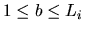

| Movement of Reading Head |
Suppose we have K files representing by . The total length of these files, measured in block numbers, is N blocks, and the length of each file is Li block(s) for . We denote the bth block of a file Fi as Fi(b) for ; e.g., the 9th block of F2 file is F2(9), and the 4th block of F3 file is F3(4).
Now consider a storage space S consisting of a single
reading head and N blocks with sequential number starting from 0 to N-1.
These K files are stored to the space S in a sequential order from
.
We will assume that there is no spare blocks
left for storing these K files. Apparently, this means that
When reading from S, a profile array PF is used to indicate the starting block of the reading for every file, and the reading order is to read a block at F1, then a block at F2, ..., a block at FK with one block being read for a file at one time. After FK is being read, we restart to read the next block at F1, then the next block at F2, ..., and the process circulates in this fashion. Within a file when the previous reading has reached to the last block, the next block to be read is the first block of this file.
Obviously, the reading head has to move through several blocks during each time of reading. Thus, we define a term TB(P) to be the total number of blocks that the reading head needs to move for the P consecutive times of reading. Apparently, we will be interested in finding the value of TB(P). Given the profile array PF you may assume the reading head is initially rested on the starting block of the first file that is going to be read, and thus TB(1) = 0.
For example: let
K = 3, N =12, L1 = 5, L2 = 3, L3 = 4, PF be 2, 3, 3.
These three files will be stored to S as shown in Fig. 1.
Fig. 1: An example of three files being stored in the storage S.
According to the given PF the reading head is initially rested on the second block of the first file, i.e., F1(2). When reading from S, the first time of reading is to read the second block of F1, i.e., F1(2), which is located at position 1. At this time TB(1) = 0. The second time of reading is to read the third block of F2, i.e., F2(3), which is located at position 7. Thus, the total number of blocks that the reading head has to move for 2 consecutive times of reading, i.e., TB(2), is 6 blocks.
Similarly, the third time of reading is to read the third block of F3, i.e., F3(3), which is located at position 10. This means that the reading head has to move 3 blocks for the third time of reading. Thus, the total number of blocks that the reading head has to move for 3 consecutive times of reading is 9 blocks, i.e., TB(3) = 0 + 6 + 3 = 9 blocks. Similarly, the fourth time of reading is to read the third block of F1, i.e., F1 (3), which is located at position 2. This means that the reading head has to move 8 blocks for the fourth time of reading. Thus, the total number of blocks that the reading head has to move for 4 consecutive times of reading is 17 blocks, i.e., TB(4) = 0 + 6 + 3 + 8 = 17 blocks.
Now
given the parameters K, N, Li, PF, P, please write a program to report the
value of TB(P), where
K: number of files, N: number of blocks in the storage S, Li: the length of each file, whereeach value is separated by a blank, PF: array of K integers representingthe starting block of the reading for each file where each value is separated by a blank, and P: number of the consecutive times of reading.
The range of each parameter is as below:
for each i
for each file, and
.
Line 1 l the number of test cases Line 2 PF P test case #1, 2K+3 decimalvalues each of which is separated by a blank ... Line k+1 PF P test case #k ... Line l+1 PF P test case #l Line l+2 -1 a constant -1 representing the end of the input file
Line 1 output for the value of TB(P) at the test case #1 ... Line k output for the value of TB(P) at the test case #k ... Line l output for the value of TB(P) at the test case #l
5 3 12 5 3 4 2 3 3 3 3 12 5 3 4 2 3 3 4 3 12 5 3 4 1 1 1 4 2 10 5 5 1 1 2 2 10 5 5 1 2 2 -1
9 17 15 5 6